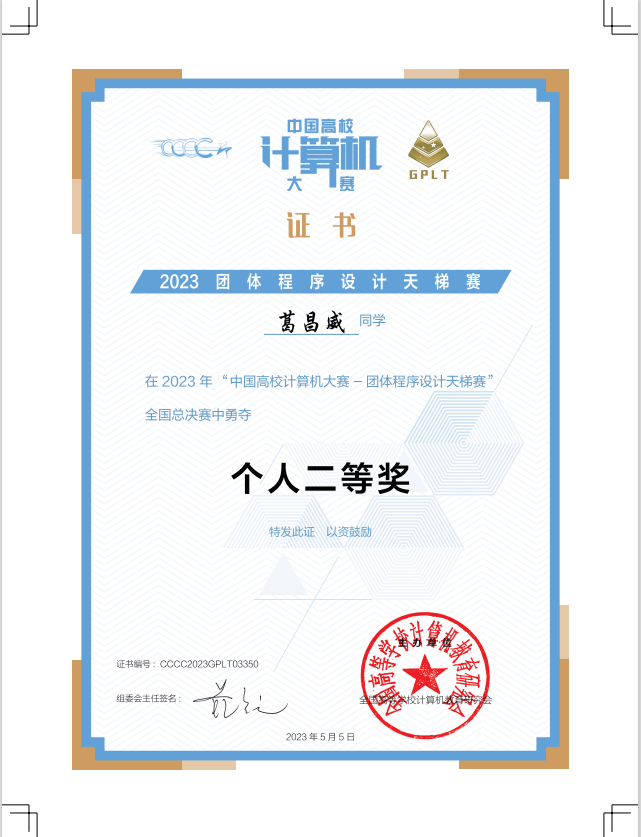

葛昌威
+(86) 15023902518 530124948@qq.com
重庆市南岸区学府大道66号重庆交通大学,邮编400074
教育
本科生，数据科学与大数据专业 GPA(3.03/5.0)
主修课程：分布式系统，多元统计分析，数据挖掘与处理，数据库原理
主修课程：分布式系统，多元统计分析，数据挖掘与处理，数据库原理
竞赛经历(部分)
国际大学生程序设计竞赛(香港站)铜牌
团体程序设计天梯赛个人二等奖(个人排名265/16304)
蓝桥杯C++ B组国赛一等奖

重庆交通大学程序设计竞赛第一名
codeforces rating 1778(max.1844)
技能
熟练C++编程,使用C++写过2000余道算法题。了解现代C++语法,STL,多线程,智能指针等。
熟悉分布式系统与磁盘数据库存储原理。
熟悉或了解数据抽取、数据清洗与预处理、大数据运算(spark)、数据分析、数据可视化等一系列流程，有多次数据分析课程项目经验。
熟悉或了解算法竞赛和工程应用中涉及到的大部分
熟悉分布式系统与磁盘数据库存储原理。
熟悉或了解数据抽取、数据清洗与预处理、大数据运算(spark)、数据分析、数据可视化等一系列流程，有多次数据分析课程项目经验。
熟悉或了解算法竞赛和工程应用中涉及到的大部分
数据结构
与算法
项目经历
C++ WebServer
- 用于简化算法竞赛出题工作，解决构造测试数据时涉及到的文件重定向，路径问题，记录标准代码运行用时与资源消耗等。相当于是一个远程自动化脚本。
- 使用html与js制作了简单的前端页面
- 内置图数据构造器，可通过参数构造十余种高随机性的图数据
- 由于需要在服务器内运行用户代码,使用seccomp与setrlimit限制程序可调用的内核函数和资源开销。
- 系统内实现了一个后缀自动机，用于过滤重复代码。配合宏展开工具与格式化工具亦可对危险代码段进行编译前过滤
数据库存储系统
- 基于现代 C++ 开发的单机数据库存储系统,底层基于LRU-K替换设计了BufferPool,所有page操作在BufferPool上进行。
- 数据库建立在B+tree上,基于了RAII来管理释放page,采用悲观锁实现B+树的并发
其他小型项目
- C++ server端通讯模块:从socket开始封装,使用epoll进行多路复用,经序列化后将报文引用放入队列，由线程池并发处理事务，接口使用注册函数式逻辑。
- RPC_STL对boost::interprocess进行的封装,利用共享内存,实现在C++进程间用消息队列传递std::map,并通过RAII来管理释放。
个人总结